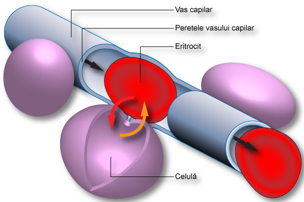

-
Capilarele  După ce sângele a străbătut arterele mari şi mici ajunge în reţeaua vaselor capilare. Capilarele sunt vase scurte (0,5cm) şi cu diametre microscopice (mai mici de 20μ). Ele sunt foarte numeroase realizând o lungime totală de 2500 km. şi o suprafaţă de 6200 mp. Capilarul are două terminaţii, prin care se leagă, la un capăt, de arteriole iar de celălalt capăt de venule (vene cu calibru mic). De asemenea, vasele capilare prezintă ramificaţii laterale prin care se unesc între ele. Aceste minuscule canale, permit trecerea prin pereţii lor subţiri, în spaţiul interstiţial, şi de aici în celule şi retur (din celule înapoi în circuitul sanguin), a apei, a proteinelor plasmatice cu masă moleculară mică, a unor elemente figurate, a mineralelor ionice, a gazelor, a substanţelor plastice ori energetice, a unor compuşi de asimilaţie sau dezasimilaţie. Prin intermediul lichidelor interstiţiale are loc schimbul nutritiv (nutriţia celulară), respirator şi excretor, dintre celule şi sânge. Lichidele, celulele şi substanţele care ies din vasele capilare sanguine, constituie mediul local al ţesuturilor şi al organelor. Deşi provin din acelaşi sânge, aceste medii locale sunt diferite de la un ţesut la altul, deoarece celulele tind să le adapteze propriilor necesităţi (faţă de "zonele" ecologice, în care factorii biotici se adaptează la mediu, ţesuturile organismului, prezintă şi capacitatea de a adapta mediul la cerinţele lor). Din interacţiunea dintre celulele unui ţesut şi mediul local depinde starea de sănătate sau aceea de boală a unui organ sau a întregului organism. Diametrul foarte mic al capilarelor, nu permite trecerea unor elemente mai mari, fără ca acestea să nu se deformeze. De exemplu, eritrocitele nu pot străbate capilarele păstrându-şi aspectul, deoarece sunt prea voluminoase. Din cauza taliei mari, ele sunt nevoite să se înghesuie, modificându-şi reversibil forma, în timpul trecerii prin vasele capilare sau prin pereţii acestora. În urma acestui frecuş permanent, globulele roşi se uzează şi îmbătrânesc repede, trebuind înlocuite în mod continuu. Schimburile dintre celulă şi sânge prin intermediul pereţilor vasului capilar Capilarele au proprietatea de a-şi modifica calibrul, permeabilitatea, filtrabilitatea şi aderenţa pereţilor interni. În mod obişnuit, prin vasele capilare, trece doar 5% din totalul sângelui circulant. Acest volum, prin modificarea formei capilarelor, poate creşte de 6 ori. Sporul cantitativ de sânge capilar se realizează pe baza micşorării volumului de sânge din vasele mai mari. Dacă are loc o vasodilataţie capilară la nivelul întregii suprafeţe cutanate, se scoate din circulaţie o cantitate însemnată de sânge de la nivelul organelor, mai ales a ficatului, splinei şi plămânilor producându-se decongestionarea lor. Vasoconstricţia dermică, acţionează în sens contrar, aducând un flux sporit sanguin spre viscere prin scăderea volemiei sanguine periferice. Există numeroşi factori tisulari, fizici şi chimici care pot modifica calibrul capilarelor. Căldura şi acidoza provoacă dilatarea acestor vase minuscule, în timp ce frigul are o acţiune contractilă. Dintre cataboliţi, dioxidul de carbon, acidul lactic, acidul uric au efect dilatator, iar amoniacul acţionează ca vasoconstrictor. Lipsa vitaminei P, hipokaliemia, hipocalcemia, carenţa proteică, histamina, insuficienţa sau excesul unor hormoni, precum şi alte substanţe, pot produce o creştere exagerată a permeabilităţii capilare. În aceste condiţii, capilarele îşi pierd rezistenţa, devin fragile, se sparg uşor şi permit trecerea, uneori masivă, a lichidelor în spaţiul interstiţial, producându-se uneori, microhemoragii sau mai des,edem.